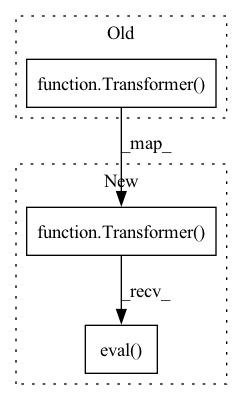

Pattern ID :38616

Before Change
use_sentence_type=False,
use_word_boundaries=False,
use_explicit_eos=False)
self.phone2mel = Transformer(idim=131, odim=80, spk_embed_dim=None)
self.mel2wav = MelGANGenerator()
def __call__(self, text):
phones = self.text2phone.string_to_tensor(text).squeeze(0).long()
After Change
use_sentence_type=False,
use_word_boundaries=False,
use_explicit_eos=False)
self.phone2mel = Transformer(idim=131, odim=80, spk_embed_dim=None).to(torch.device(device))
self.mel2wav = MelGANGenerator().to(torch.device(device))
self.phone2mel.eval()
self.mel2wav.eval()
self.to(torch.device(device))
def forward(self, text):
In pattern: SUPERPATTERN
Frequency: 3
Non-data size: 3
Instances
Fragment ID: 110426710
Project Name: digitalphonetics/ims-toucan
Commit Name: 2d25ca1658f38a35d3c8bff5819dae14763ceb68
Time: 2021-03-18
Author: florian.lux@ims.uni-stuttgart.de
File Name: InferenceInterfaces/EnglishSingleSpeakerTransformerTTSInference.py
M Class Name: EnglishSingleSpeakerTransformerTTSInference
N Class Name: EnglishSingleSpeakerTransformerTTSInference
M Method Name: __init__(2)
N Method Name: __init__(1)
M Parent Class: torch.nn.Module
N Parent Class:
M File Name: InferenceInterfaces/EnglishSingleSpeakerTransformerTTSInference.py
N File Name: InferenceInterfaces/EnglishSingleSpeakerTransformerTTSInference.py
M Start Line: 308
M End Line: 315
N Start Line: 308
N End Line: 320
'>
Before Change
def test_transformer_output_shape():
model = Transformer(layers=2, pad_idx=0, words=80, seq_len=100, heads=2,
dims=16, rate=4, bidirectional=False)
x, past = model(torch.randint(80, (10,)))
assert x.shape == (10, 80)
for p in past:
After Change
def test_transformer_output_shape():
model = Transformer(layers=2, pad_idx=0, words=80, seq_len=100, heads=2,
dims=16, rate=4, bidirectional=False).eval()
x, past = model(torch.randint(80, (10,)))
assert x.shape == (10, 80)
for p in past:
'>
Fragment ID: 110426711
Project Name: affjljoo3581/gpt2
Commit Name: cf7388417386beaf3c104f2e3c48ba86630f3681
Time: 2020-09-11
Author: affjljoo3581@gmail.com
File Name: tests/modeling/test_transformer.py
M Class Name: AnonimousClass
N Class Name: AnonimousClass
M Method Name: test_transformer_output_shape(0)
N Method Name: test_transformer_output_shape(0)
M Parent Class:
N Parent Class:
M File Name: tests/modeling/test_transformer.py
N File Name: tests/modeling/test_transformer.py
M Start Line: 35
M End Line: 36
N Start Line: 35
N End Line: 36
'>
Before Change
def test_transformer_generating_sequence():
model = Transformer(layers=2, pad_idx=0, words=80, seq_len=100, heads=2,
dims=16, rate=4, bidirectional=False)
past = None
for _ in range(10):
x, past = model(torch.randint(80, (1,)), past=past)
After Change
def test_transformer_generating_sequence():
model = Transformer(layers=2, pad_idx=0, words=80, seq_len=100, heads=2,
dims=16, rate=4, bidirectional=False).eval()
past = None
for _ in range(10):
x, past = model(torch.randint(80, (1,)), past=past)
'>
Fragment ID: 110426712
Project Name: affjljoo3581/gpt2
Commit Name: cf7388417386beaf3c104f2e3c48ba86630f3681
Time: 2020-09-11
Author: affjljoo3581@gmail.com
File Name: tests/modeling/test_transformer.py
M Class Name: AnonimousClass
N Class Name: AnonimousClass
M Method Name: test_transformer_generating_sequence(0)
N Method Name: test_transformer_generating_sequence(0)
M Parent Class:
N Parent Class:
M File Name: tests/modeling/test_transformer.py
N File Name: tests/modeling/test_transformer.py
M Start Line: 60
M End Line: 61
N Start Line: 60
N End Line: 61